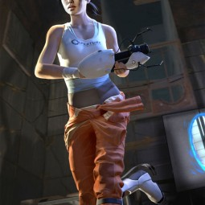
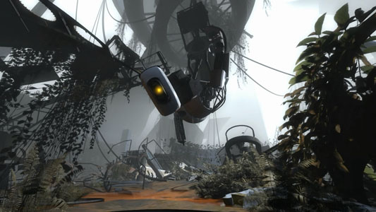
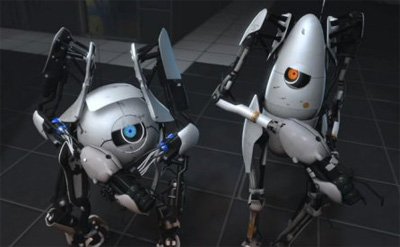
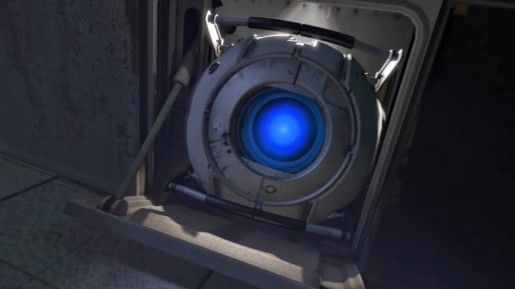
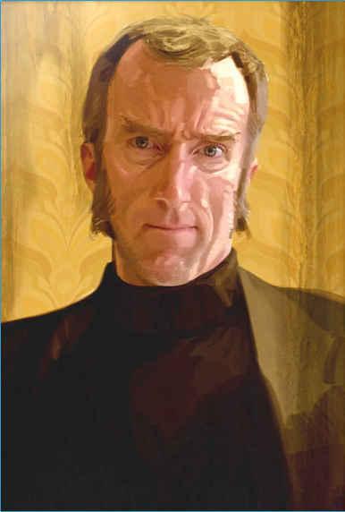

Тест сайта по игре portal 2
Персонажи
Челл (Chell) — игровой персонаж, главная героиня Portal и Portal 2. Челл была подопытной девушкой, которая сумела пройти все испытания подземного комплекса Aperture Science в первой игре и уничтожить агрессивный суперкомпьютер ГЛэДОС (GLaDOS), после чего ненадолго оказалась на поверхности и, будучи недвижимой, была возвращена обратно роботом-распорядителем вечеринки.  ГЛэДОС (GLaDOS, Genetic Lifeform and Disk Operating System) — Генетическая форма жизни и дисковая операционная система. ГЛэДОС — суперкомпьютер Aperture Science, обладающий маниакальными наклонностями, который при своём запуске обрёл самосознание и убил всех учёных в Лаборатории исследования природы порталов. Взяв управление Лабораторией, ГЛэДОС устроила бесконечный цикл испытаний с Переносным устройством создания порталов на подопытных людях. Когда Челл в игре Portal сумела пройти все испытания, ГЛэДОС пыталась убить девушку, но в результате противоборства была сама уничтожена ею. Через много лет, уже после пробуждения Челл и во время её побега, Уитли случайно запускает процесс её восстановления.  Атлас и Пи-боди (Atlas and P-body) — двое роботов, которые станут игровыми персонажами в кооперативном режиме Portal 2. Роботы были собраны ГЛэДОС во время событий Portal как новые подопытные в экспериментах с порталами. Это было сделано для того, чтобы исключить людей из процесса тестирования. Как видно, роботы собраны из деталей модулей персональности и автоматических турелей, и, по словам разработчиков, стилизованы под мужчину и женщину.  Уитли (Wheatley). "Он не обычный дурак, он - спроектированный дурак" - ГЛэДОС. Один из так называемых модулей персональности — шарообразных машин с искусственным интеллектом, для разных целей использующихся в комплексе Aperture Science. Болтливый и несколько застенчивый модуль по имени Уитли, который перемещается по Лаборатории на специальных рельсах, по словам GLaDOS он генерирует бесконечный поток глупых идей и когда был подключён к ней очень ей надоедал ведь вечно болтал.  Кейв Джонсон (Cave Johnson) — основатель и председатель совета директоров корпорации Aperture Science. Он умер ещё до событий Portal.В Portal 2 мы услышим только многочисленные записи его голоса. В отсутствие ГЛэДОС он будет заменять её по части инструктажа и юмора, причем довольно успешно. 